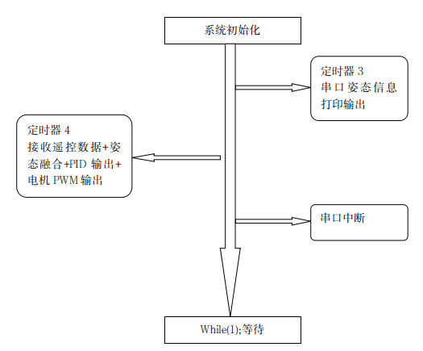
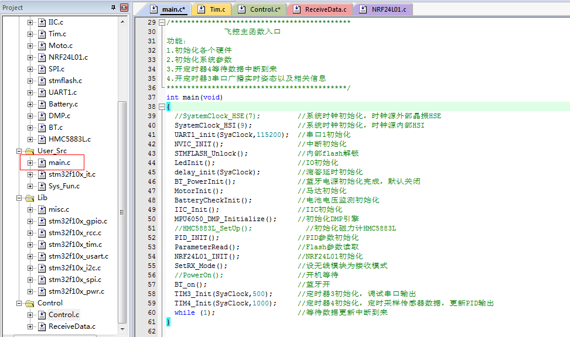
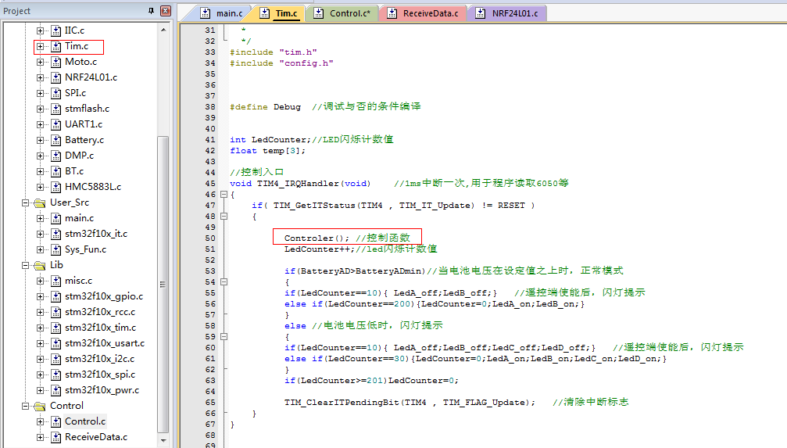
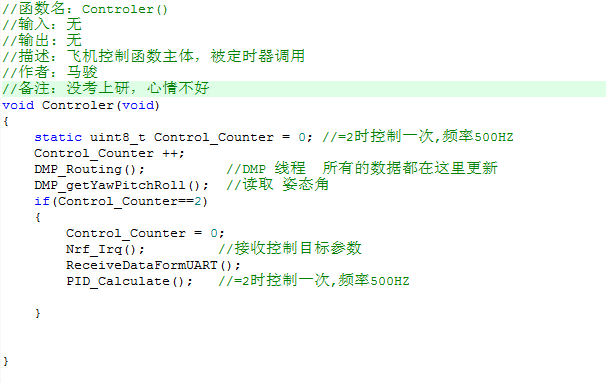
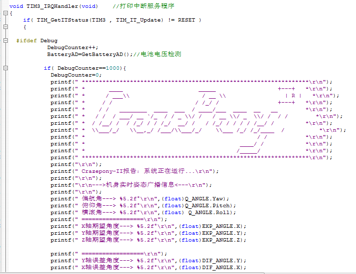
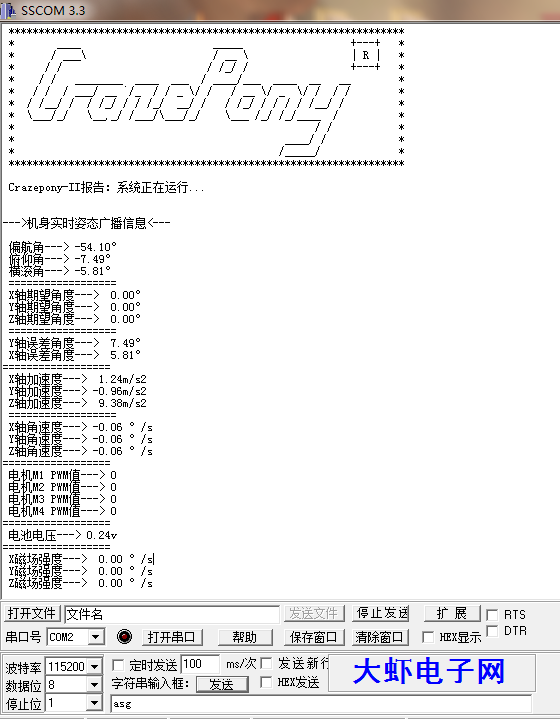

飛控源代碼部分，截止目前為止，都是屬於一磚一瓦敲出來的。沒有使用實時操作系統，我們稱之為裸機代碼，未使用操作系統裸跑的意思。為了滿足各個層次用戶的需求和體現出我們的努力，後續會試著移植一個FreeRtos的實時操作系統內核，因為bitcraze 團隊就用的這個內核，向他們無限靠近是我們的目標。
那麼，現在就結合裸機代碼，來說說Crazepony的軟件框架。

總體的流程圖，就是這麼簡單。定時器4裡面的任務，是整個飛機的核心。下面具體介紹實現細節。
學過 51單片機的都知道，任何一個處理器要正常運行後面的代碼，首先必須得有一大段設備初始化的代碼先運行，這些代碼用於初始化處 理器的內部時鐘、中斷優先級、I/O 口的輸入輸出方向等等，也就是為後續代碼正常運行，做了一個環境配置準備。
Crazepony 的主控是Crotex-M3內核，其實就是ARM架構發展到一定階段的產物。Crotex-M3那是什麼呢？還是ARM架構。於是，對ARM的初始化，首先必須要做的就是系統時鐘初始化，中斷向量表初始化，中斷優先級初始化，I/O方向初始化，如下：

STM32內部模擬EEPROM初始化→LED初始化→延時函數初始化→藍牙電源使能初始化→電機PWM輸出初始化→電池電壓AD初始化→IIC總線初始化→傳感器初始化→PID參數初始化→無線收發模塊初始化為接受模式→開 藍牙→開定時器3→開定時器4。
初始化看起來很繁雜，很多，也沒啥好說的。
接下來 ，程序運行到死循環while（1）；程序會一直停在這裡，等待數據中斷的到來，而不是死機死在這裡，這是有區別的，學過51的人都知道，我不再多說。
在初始化代碼段，我們說到初始化了兩個定時器，一個定時器3，一個定時器4，這兩個定時器都可以打斷死循環while（1）。定時器3用於廣播機身姿態信息，定時器4的任務要繁重得多，用於 更新遙控數據+機身姿態融合+PID計算輸出+PWM輸出。可以看到，定時器4裡面任務的優先級明顯要比定時器3實時性要求更高，所以。中斷優先級的順序是：定時器4 > 串口中斷 > 定時器3。姿態更新頻率為1000Hz，廣播信息更新頻率為1Hz。
綜上，有點亂，但是我們縷一縷。很簡單，只有3箇中斷。定時器4是核心中斷，所有的算法都是在這裡實現的，機身的穩定也是靠這個中斷來實現的


可以看到定時器4的中斷服務函數TIM4_IRQHandler()中，有個一Controler()。
而Controler()內部，DMP姿態輸出→接收遙控器數據→接收串口數據→PID計算+PWM輸出,這些任務構成了Controler()函數。
Crazepony在飛行過程中,會向上位機發送姿態數據。於是，我們用了一個定時器來處理串口發送數據的問題。
在Crazepony上，ISP下載是通過UART1來實現的，有線串口打印用的UART1，2.1藍牙透傳也是接的UART1。所以，為了避免藍牙透傳和有線串口之間的數據衝突，我將藍牙的供電設計成了軟件使能方式啟動藍牙電源。這樣一來，就可以程控切換數據通道，保證數據正常。
在回到定時器3的功能上來，先看具體程序段：

從定時器3的中斷服務子程序可以看到，每進一次中斷，向串口打印一次logo以及相關的姿態信息數據。此時，如果連接的是mircousb線，那麼用串口助手可以看到如圖所示的姿態信息反饋。

說到這裡，有必要說一個事情就是，中斷優先級的問題。
由於姿態數據對實時性要求是最高的，所以，處理姿態的代碼應該是優先執行的，所以，定時器4的優先級要高於串口打印的優先級，即定時器4 > 串口中斷 > 定時器3。